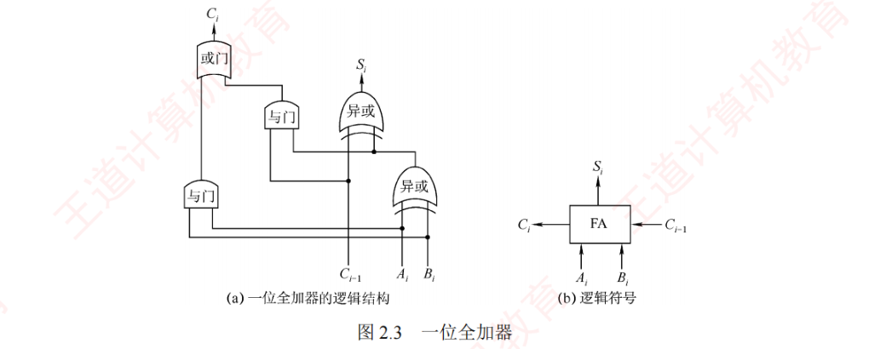
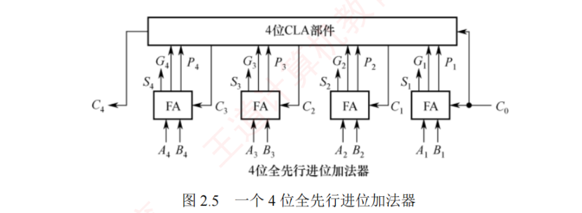
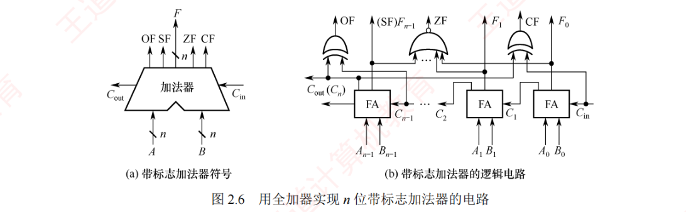
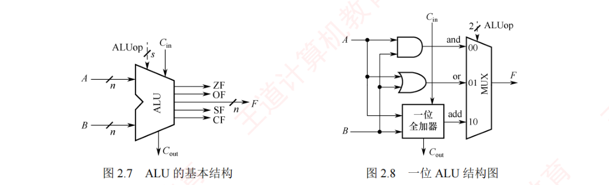
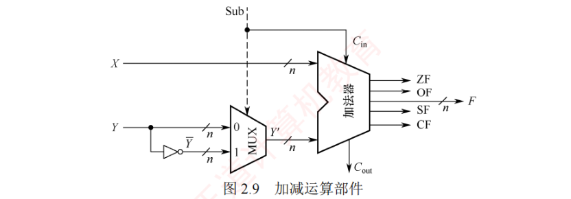
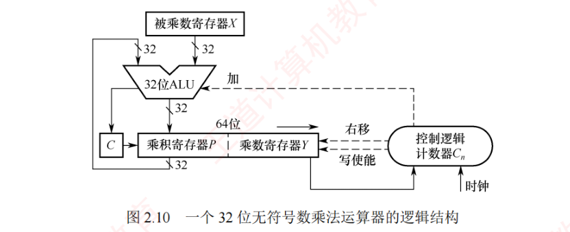
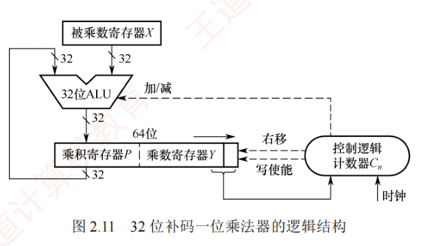
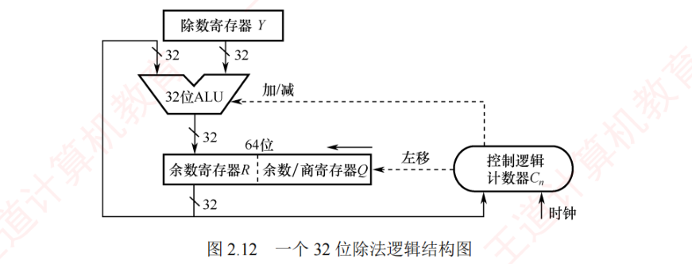

2.2 运算方法和运算电路
这一节是本章的硬件落点：加法器怎么搭起来、ALU 是什么、补码加减怎么算、怎么判溢出、乘除电路怎么转。其中 2.2.3 补码加减运算与标志位是全节的重心，选择题几乎年年出现；乘除运算大纲已降低要求，掌握基本原理和电路结构即可。标志位（ZF/OF/SF/CF）的含义与「用标志位比较大小」是本节的招牌考法。
2.2.1基本运算部件
在计算机中，运算器由算术逻辑单元（Arithmetic Logic Unit, ALU）、移位器、状态寄存器（PSW）和通用寄存器等组成。运算器的基本功能包括加、减、乘、除四则运算，与、或、非、异或等逻辑运算，以及移位、求补等操作。ALU 的核心部件是加法器。
1. 一位全加器（FA）
全加器（Full Adder, FA）是最基本的加法单元。它有三个输入：加数 \(A_i\)、加数 \(B_i\) 与来自低位的进位 \(C_{i-1}\)；两个输出：本位和 \(S_i\) 及向高位的进位 \(C_i\)。其逻辑表达式如下：
和表达式：$$S_i = A_i \oplus B_i \oplus C_{i-1}$$（当 \(A_i\)、\(B_i\)、\(C_{i-1}\) 中有奇数个 1 时，\(S_i = 1\)，否则 \(S_i = 0\)）
进位表达式：$$C_i = A_i B_i + A_i C_{i-1} + B_i C_{i-1}$$（三个输入中至少有两个 1 时产生进位，即多数表决）

2. 串行进位加法器
将 \(n\) 个全加器级联可构成 \(n\) 位串行进位加法器（又称行波进位加法器），其特点是进位信号逐级传递：每一级的进位输出直接作为下一级的进位输入。
图 2.4 中的加法器可实现两个 \(n\) 位二进制数 \(A = A_{n-1} A_{n-2} \cdots A_0\) 和 \(B = B_{n-1} B_{n-2} \cdots B_0\) 逐位相加，得到和 \(S = S_{n-1} S_{n-2} \cdots S_0\) 及最终进位 \(C_n\)。例如，当 \(A = 1111\)、\(B = 0001\)（4 位）时，输出 \(S = 0000\)，\(C_n = 1\)（溢出就舍弃）。
在串行进位加法器中，总运算延迟主要由进位信号从最低位传播到最高位的时间决定，位数越多，延迟越长。因此，缩短进位传输延迟是提高加法器性能的关键。
3. 并行进位加法器
并行进位（也称先行进位）加法器能够显著提高加法运算速度，因为它能以几乎同时的方式生成所有进位信号，而非逐级传递。为了实现这一目标，\(n\) 位全加器被连接至一个 \(n\) 位先行进位逻辑组件（CLA 部件），以便几乎同时生成所有进位信号。这种并行进位加法器对较大位数的运算效率显著高于串行进位加法器。图 2.5 展示了一个 4 位全先行进位加法器的例子；随着加法器位数的增加，电路设计复杂度也会相应提高。

4. 带标志加法器
对 \(n\) 位加法器而言，除了得到运算结果外，还要关注运算过程中是否发生了溢出、结果的正负性、结果是否为零等状态信息，这些信息对程序的分支控制非常关键。为此，在 \(n\) 位加法器的基础上增加了标志位的逻辑电路，它能记录加减结果的状态，还能生成标志位：OF、SF、ZF 和 CF，每个标志占 1 位。

在图 2.6 中，溢出标志 OF 通过检测最高有效位的进位输出 \(C_n\) 是否不同于次高位进位 \(C_{n-1}\) 得到，即 \(\mathrm{OF} = C_n \oplus C_{n-1}\)，用于判断有符号数加减运算是否溢出：OF = 1 表示溢出。符号标志 SF 等于结果的最高有效位，即 \(\mathrm{SF} = F_{n-1}\)，用于指示有符号数加减运算结果的正负性：SF = 0 表示结果为正，SF = 1 表示结果为负。零标志 ZF 在结果的所有位均为 0 时设置为 1，用于判断加减运算结果是否为零：ZF = 1 表示结果为 0，ZF = 0 表示结果非零。进位/借位标志 CF 用于判断无符号数的加减运算是否发生溢出：CF = 1 表示溢出，CF = 0 表示未溢出（详见 2.2.3 节）。
5. 算术逻辑单元（ALU）
ALU 是一种多功能的组合逻辑电路，能执行多种算术与逻辑运算。其中，加法和减法由带标志加法器直接完成；乘法和除法通常通过 ALU 配合控制逻辑，以多次加/减和移位的方式迭代实现。此外，ALU 还能执行与、或、非等基本逻辑运算。其基本结构如下：\(A\) 和 \(B\) 作为两个 \(n\) 位操作数输入，\(C_{in}\) 为进位输入，ALUop 为操作控制信号，用于选择 ALU 执行的具体功能。例如，当 ALUop 选择加法（Add）时，ALU 输出 \(A + B + C_{in}\)。ALUop 的位数决定了可支持的操作种类数：例如 3 位 ALUop 最多可支持 8 种不同操作。

2.2.2定点数的移位运算
当机器中没有乘除运算电路时，可以通过加法和移位相结合的方法实现乘除运算。对于二进制数，左移一位，若未发生溢出，相当于乘以 2（类似于十进制数左移一位相当于乘以 10）；右移一位，若忽略因移出而舍弃的末位尾数，相当于除以 2。根据移位操作类型的不同，移位运算可分为逻辑移位和算术移位。
1. 逻辑移位
逻辑移位将操作数视为无符号整数。逻辑移位的规则：左移时，高位移出，低位补 0，若高位的 1 移出，则发生溢出；右移时，低位移出，高位补 0。
例如，4 位无符号数 0001（+1）左移一位变为 0010（+2），相当于乘以 2，未溢出；0001（+1）右移一位变为 0000（0），相当于除以 2 并舍弃小数部分。又如，1000（+8）左移一位变为 0000（0），相当于乘以 2，但结果超出了 4 位无符号数的表示范围，发生溢出。
2. 算术移位
算术移位需要考虑符号位的问题，即将操作数视为有符号整数。有符号整数采用补码表示，因此对有符号整数的移位操作应采用补码算术移位方式。算术移位的规则：左移时，高位移出，低位补 0，若移出的高位与原符号位不同（左移后符号位改变），则发生溢出；右移时，低位移出，高位补符号位，若低位的 1 移出，则影响精度。
例如，4 位补码 0010（+2）左移一位变为 0100（+4），未溢出；1001（−7）左移一位变为 0010，符号由负变正，表明发生溢出（因为 −14 超出了 4 位补码的表示范围）。又如，1001（−7）右移一位变为 1100（−4），保留了符号位，但丢失了最低有效位，影响精度。
| 移位类型 | 数据视角 | 方向 | 添补规则 | 溢出 / 精度 |
|---|---|---|---|---|
| 逻辑移位 | 无符号数 | 左移 | 低位补 0 | 高位的 1 移出则溢出 |
| 右移 | 高位补 0 | 移出位舍弃 | ||
| 算术移位 | 有符号数（补码） | 左移 | 低位补 0 | 移出位与原符号位不同则溢出 |
| 右移 | 高位补符号位 | 低位的 1 移出则损失精度 |
2.2.3定点数的加减运算
1. 补码加减运算
补码加减运算规则简单，易于硬件实现。补码加减运算的公式如下（设字长为 \(n+1\) 位）：
$$[A+B]_{补} = [A]_{补} + [B]_{补} \pmod{2^{n+1}}$$ $$[A-B]_{补} = [A]_{补} + [-B]_{补} \pmod{2^{n+1}}$$补码运算具有以下特点：
- 按二进制加法规则运算，逢二进一；
- 若做加法，两个数的补码直接相加；若做减法，则将被减数与减数的负数补码相加（\([-B]_{补}\) 由 \([B]_{补}\) 连同符号位一起取反、末位加 1 得到）；
- 符号位与数值位一同参与运算，结果的符号位由运算自然得出；
- 运算结果自动截断为 \(n+1\) 位（模 \(2^{n+1}\)），高位进位被丢弃，结果仍为补码形式。
【例 2.3】设机器字长为 8 位（含 1 位符号位），\(A = 15\)，\(B = 24\)，求 \([A+B]_{补}\) 和 \([A-B]_{补}\)。
解：\(A = +0001111\)，\(B = +0011000\)，求得 \([A]_{补} =\) 00001111，\([B]_{补} =\) 00011000，\([-B]_{补} =\) 11101000。则：
- \([A+B]_{补} = [A]_{补} + [B]_{补} =\)
00001111+00011000=00100111，符号位为 0，真值为 +39； - \([A-B]_{补} = [A]_{补} + [-B]_{补} =\)
00001111+11101000=11110111，符号位为 1，真值为 −9。
2. 溢出判别方法
（1）采用单符号位。减法运算在机器中是用加法器实现的，因此加法和减法均可统一视为两个补码相加。溢出仅发生在参与运算的两个数符号相同，而结果符号与之不同的情况。设参与运算的两个操作数的符号位分别为 \(A_f\) 和 \(B_f\)，运算结果的符号为 \(S_f\)，则溢出逻辑表达式为：
$$V = A_f B_f \overline{S_f} + \overline{A_f}\, \overline{B_f}\, S_f$$即「正加正得负」或「负加负得正」时 \(V = 1\)，表示溢出。
（2）采用一位符号位并借助进位判断。设符号位（最高位）产生的进位为 \(C_n\)，最高数值位（次高位）产生的进位为 \(C_{n-1}\)，若 \(C_n\) 与 \(C_{n-1}\) 不同，则表示溢出。溢出逻辑表达式为：
$$V = C_n \oplus C_{n-1}$$（3）采用双符号位。使用两个符号位 \(S_{s1} S_{s2}\)（变形补码），若两个符号位不同，则表示溢出。\(S_{s1}S_{s2}\) 的各种情况如下：① \(S_{s1}S_{s2} = 00\)：表示结果为正数，无溢出；② \(S_{s1}S_{s2} = 01\)：表示结果正溢出；③ \(S_{s1}S_{s2} = 10\)：表示结果负溢出；④ \(S_{s1}S_{s2} = 11\)：表示结果为负数，无溢出。溢出逻辑表达式为：
$$V = S_{s1} \oplus S_{s2}$$在上述三种方法中，若 \(V = 0\)，则表示无溢出；若 \(V = 1\)，则表示有溢出。采用双符号位时，无论是否溢出，高位（第 1 位）符号位始终代表结果的真正符号。
3. 加减运算电路
图 2.9 所示为一个加减运算部件，其输入包括两个 \(n\) 位操作数 \(X\) 和 \(Y\)，以及一个控制信号 Sub。其中，\(Y\) 分成两路：一路直接接入二选一多路选择器（MUX），另一路经一个取反器（非门）接入同一选择器；控制信号 Sub 不仅决定选择哪一路数据进入加法器，还在执行减法时作为最低位的进位输入 \(C_{in}\)。输出包括 \(n\) 位运算结果 \(F\) 以及各类标志位。

（1）加法运算的工作原理。当执行加法操作时（Sub = 0）：输入端 \(X\) 直接送入加法器的一端，\(Y\) 接入 MUX；控制信号 Sub = 0，同时作为加法器最低位进位输入 \(C_{in} = 0\)；MUX 在 Sub = 0 时选择 \(Y\) 直接通过，加法器执行 \(X + Y + C_{in}\)（即 \(X + Y\)），输出 \(n\) 位结果 \(F\) 和进位输出 \(C_{out}\)，并生成状态标志位。
（2）减法运算的工作原理。当执行减法操作时（Sub = 1）：\(X\) 直接接入加法器的一端，\(Y\) 接入 MUX；控制信号 Sub = 1，同时作为加法器的最低位进位输入 \(C_{in} = 1\)；MUX 在 Sub = 1 时选择经非门取反的 \(\overline{Y}\) 通过，加法器执行 \(X + \overline{Y} + C_{in}\)（即 \(X + \overline{Y} + 1\)），输出 \(n\) 位结果 \(F\) 和进位输出 \(C_{out}\)，并生成状态标志位。
语言解释：
- 若 \(X\)、\(Y\) 被视为无符号数，减法运算等价于计算 \(X - Y + 2^n\)（模 \(2^n\) 运算）：
- \(X \ge Y\) 时，\(X - Y + 2^n \ge 2^n\)，有进位 \(C_{out} = 1\)，舍去高位后 \(F = X - Y\)，表示无借位（结果非负）；
- \(X < Y\) 时，\(0 < X - Y + 2^n < 2^n\)，无进位 \(C_{out} = 0\)，说明不够减；此时 \(\mathrm{CF} = \mathrm{Sub} \oplus C_{out} = 1 \oplus 0 = 1\)，表示有借位。
- 若 \(X\)、\(Y\) 被视为有符号数（\([X]_{补}\)、\([Y]_{补}\)），则该运算等价于 \([X - Y]_{补} = [X]_{补} + [-Y]_{补}\)：
- 结果 \(F\) 即为 \([X - Y]_{补}\)；
- 若运算结果超出 \(n\) 位补码表示范围（例如，正减负得负，或负减正得正），则发生有符号溢出，由溢出标志 OF 指示。
00…0 + 11…1 = 11…1：若解释为有符号数，对应值为 −1，结果是正确的；若解释为无符号数，对应值为 \(2^n - 1\)（\(n\) 位无符号数的最大值），与数理结果不符。此类易混点较常被考查。
4. 各类标志位的含义
- 零标志 ZF：当结果 \(F = 0\) 时，ZF = 1；否则 ZF = 0。对无符号数和有符号数均有意义。
- 溢出标志 OF：用于判断有符号数运算是否发生溢出，\(\mathrm{OF} = C_n \oplus C_{n-1}\)（符号位进位与最高数值位进位的异或）。对无符号数运算无意义——无法依据 OF 判断无符号数运算是否溢出。例如，无符号加法
010+011=101，虽然 OF = 1，但结果并未溢出（2 + 3 = 5 在 3 位无符号数范围内）。 - 符号标志 SF：等于结果 \(F\) 的最高位（符号位）。仅对有符号数有意义。
- 进/借位标志 CF：用于表示无符号数运算中的进位/借位情况，判断是否溢出，仅对无符号数有意义。加法（Sub = 0）时，CF = 1 表示有进位，即发生上溢，此时 CF = \(C_{out}\)；减法（Sub = 1）时，CF = 1 表示有借位，即不够减，CF 等于 \(C_{out}\) 取反。综合得 \(\mathrm{CF} = \mathrm{Sub} \oplus C_{out}\)。例如，无符号数加法
110+011产生进位、无符号数减法000−111产生借位，结果均发生溢出（CF = 1）。
5. 无符号数大小的比较
在无符号数运算中，零标志 ZF 和进/借位标志 CF 是判断大小关系的关键。设 \(A\) 和 \(B\) 为两个无符号数，执行运算 \(A - B\) 后，根据 ZF 和 CF 的值可判断 \(A\) 和 \(B\) 的大小：
- 若 \(A = B\)：如 \(A - B = 011 - 011 = 000\)，结果为零 ZF = 1，无借位 CF = 0；
- 若 \(A > B\)：如 \(A - B = 010 - 001 = 001\)，结果非零 ZF = 0，无借位 CF = 0；
- 若 \(A < B\)：如 \(A - B = 000 - 001 = (1)000 - 001 = 111\)，结果非零 ZF = 0，有借位 CF = 1。
综上，判断规则如下：当 ZF = 1 时（无须检查 CF），说明 \(A = B\)；当 ZF = 0 且 CF = 0 时，说明 \(A > B\)；当 CF = 1 时（此时 ZF 必为 0，无须额外检查），说明 \(A < B\)。
6. 有符号数大小的比较
在有符号数运算中，零标志 ZF、溢出标志 OF 和符号标志 SF 共同用于判断大小关系。设 \(A\) 和 \(B\) 为两个有符号数，执行运算 \([A]_{补} - [B]_{补}\) 后，根据 ZF、OF、SF 的值可判断 \(A\) 和 \(B\) 的大小：
- 若 \(A = B\)：如 \([A]_{补} - [B]_{补} = 011 - 011 = 011 + 101 = (1)000\)，得 ZF = 1，OF = \(C_3 \oplus C_2\) = 0，SF = 0；
- 若 \(A > B\)：无溢出示例，如 \(010 - 001 = 010 + 111 = (1)001\)，得 ZF = 0，OF = 0，SF = 0；有溢出示例，如 \(011 - 101 = 011 + 011 = 110\)，得 ZF = 0，OF = 1，SF = 1（正数减负数溢出为负）；
- 若 \(A < B\)：无溢出示例，如 \(000 - 001 = 000 + 111 = 111\)，得 ZF = 0，OF = 0，SF = 1；有溢出示例，如 \(101 - 011 = 101 + 101 = (1)010\)，得 ZF = 0，OF = 1，SF = 0（负数减正数溢出为正）。
综上，判断规则如下：当 ZF = 1 时，说明 \(A = B\)；当 ZF = 0 且 OF = SF（或 OF ⊕ SF = 0）时，说明 \(A > B\)；当 ZF = 0 且 OF ≠ SF（或 OF ⊕ SF = 1）时，说明 \(A < B\)。
*7. 原码的加减运算（了解）
在原码加减运算中，需将符号位与数值位分开处理，规则较为复杂。加法规则遵循「同号求和，异号求差」的原则：先将两操作数的符号位与数值位分离，若符号相同，则数值位相加，结果符号位不变；若数值位相加时最高位产生进位，则发生溢出。若符号不同，则用绝对值较大的数减去绝对值较小的数，结果符号位与绝对值较大的数相同。减法规则：先将减数的符号取反，再将被减数与符号取反后的减数按原码加法进行运算。
由于原码加减法需要比较两数的绝对值大小，再决定是执行加法还是执行减法，控制逻辑复杂，难以用单一加法器高效实现。因此，现代计算机普遍采用补码进行加减运算，以简化硬件设计。
2.2.4定点数的乘除运算
1. 补码乘法？先从原码说起——乘法运算的基本原理
（1）原码乘法的运算原理。原码乘法的特点是符号位与数值位分别处理，其运算过程分为两步：① 乘积的符号位由两个乘数的符号位异或得到；② 乘积的数值位是两个乘数绝对值的乘积。数值位的乘法可归结为两个无符号数的相乘。
以下是两个手算乘法的例子：被乘数 \(X = x_3 x_2 x_1 x_0 = 1101\)（13），乘数 \(Y = y_3 y_2 y_1 y_0 = 1011\)（11）：
1 1 0 1 被乘数 X = 1101 (13)
× 1 0 1 1 乘数 Y = 1011 (11)
─────────────
1 1 0 1 X·y₀ = X×2⁰ (X·1 左移 0 位)
1 1 0 1 X·y₁ = X×2¹ (X·1 左移 1 位)
0 0 0 0 X·y₂ = X×2² (X·0 左移 2 位)
1 1 0 1 X·y₃ = X×2³ (X·1 左移 3 位)
─────────────
1 0 0 0 1 1 1 1 (143)上述过程可写成数值推导形式：
$$X \cdot Y = X \cdot (y_3 \cdot 2^3 + y_2 \cdot 2^2 + y_1 \cdot 2^1 + y_0 \cdot 2^0) = [\,[(X \cdot y_3) \cdot 2 + X \cdot y_2] \cdot 2 + X \cdot y_1\,] \cdot 2 + X \cdot y_0$$部分积右移的迭代形式：在硬件实现中，通常采用部分积右移的方式将上述求和过程转换为迭代形式。设乘数 \(Y = y_{n-1} \cdots y_1 y_0\)（其中 \(y_0\) 为最低位），定义部分积序列 \(P_0, P_1, \cdots, P_n\) 如下：
$$P_0 = 0$$ $$P_1 = (P_0 + X \cdot y_0) \gg 1$$ $$P_2 = (P_1 + X \cdot y_1) \gg 1$$ $$\cdots$$ $$P_n = (P_{n-1} + X \cdot y_{n-1}) \gg 1$$其中，「\(\gg 1\)」表示逻辑右移一位。需要强调的是，这里的移位是操作的一部分，而非数学上的除法；所有中间结果在 \(2n\) 位存储空间中保留完整精度。经过 \(n\) 次迭代后，最终得到的 \(2n\) 位部分积 \(P_n\) 即为乘积 \(X \cdot Y\) 的完整二进制表示。乘法运算可通过加法和移位实现，为了保证精度，需分配使用 \(2n\) 位寄存器存储结果。原码乘法的流程可归纳如下：
- 被乘数和乘数均取绝对值，作为无符号数参与运算，结果的符号位为 \(x_f \oplus y_f\)；
- 初始部分积 \(P_i = 0\)，从乘数的最低位 \(y_0\) 开始，将当前部分积 \(P_{i-1}\) 加上 \(X \cdot y_i\)，然后逻辑右移一位。重复此步骤 \(n\) 次，最终所得的 \(2n\) 位部分积即为数值乘积。
2. 无符号整数乘法运算电路
图 2.10 展示了一个 32 位无符号数乘法运算器的逻辑结构，该电路采用加法与移位相结合的方法来完成乘法运算，其设计思想源自手算乘法的基本原理。

下面介绍其主要组成部分及其工作原理。
1）初始化：
- 被乘数寄存器 X：存储 32 位被乘数 X，在整个乘法过程中保持不变；
- 乘数寄存器 Y：初始时存储 32 位乘数 Y；
- 乘积寄存器 P：初始化为 0，用于存放部分积（高 32 位结果）；
- 计数器 \(C_n\)：初始化为 \(n\)（本例为 32），表示需要进行 \(n\) 次迭代。
2）执行过程（循环 \(n\) 次）：
- 判断：将乘数寄存器 Y 的最低位送入控制逻辑；
- 加法操作：若 Y 的最低位为 1，则将当前部分积 P 加上被乘数 X，并将进位存入进位触发器 C；若 Y 的最低位为 0，则执行空操作；
- 移位操作：将 C、P 和 Y 视为一个整体，执行一次逻辑右移。具体来说，进位 C 移入 P 的最高位，P 的最低位移入 Y 的最高位，Y 的最低位被舍弃；
- 更新计数器：计数器 \(C_n\) 减 1。若 \(C_n \neq 0\)，则继续下一轮迭代；否则算法结束。
3）结果与溢出判断：
- 最终结果：64 位乘积结果存储在寄存器对 {P : Y} 中，其中 P 为高 32 位，Y 为低 32 位；
- 溢出判断：若高 32 位结果 P 不为零，则乘积超出了 32 位无符号数的表示范围，发生溢出。此时，处理器将溢出标志 OF 与进位标志 CF 同时置 1。
4）溢出处理：溢出处理属于软件层面的操作，通过检查 CF 或 OF 标志位即可判断是否发生溢出。若检测到溢出，则可在编译时插入一条「溢出自陷指令」，自动触发异常处理程序，以处理错误（如报告错误、转为高精度计算等）。对于不要求结果精确性的应用，程序员可选择忽略溢出。
3. 带符号整数的乘法运算电路
带符号整数采用补码形式，需要同时处理符号位。其电路与无符号乘法器几乎相同，只是控制逻辑不同：A. D. Booth 提出的 Booth 算法将符号位与数值位统一处理，直接生成补码形式的乘积。图 2.11 所示为 32 位补码一位乘法器的逻辑结构，其整体架构与图 2.10 的无符号乘法运算器类似，主要区别在于控制逻辑。

Booth 算法的数学推导较为复杂，通常不在考查范围内。其执行要点如下：乘数寄存器 Y 在其右侧附加一个辅助位 \(y_{-1}\)（初始为 0）；每轮迭代根据 Y 的最低位 \(y_0\) 与辅助位 \(y_{-1}\) 组合成的两位代码决定操作：若为 10，则执行 \(P = P - X\)（加上被乘数的负数补码）；若为 01，则执行 \(P = P + X\)（加上被乘数）；若为 00 或 11，则执行空操作。随后将 P、Y 和 \(y_{-1}\) 视为一个整体执行一次算术右移（P 的最低位移入 Y 的最高位，Y 的最低位移入辅助位 \(y_{-1}\)），循环 \(n\) 次后结束。
补码乘法的溢出判断：若高 32 位结果 P 不是低 32 位结果 Y 的符号扩展（P 的所有位不等于 Y 的符号位），则判定溢出，此时处理器将溢出标志 OF 与进位标志 CF 同时置 1。
乘法运算的三种实现方式：
- 迭代式乘法器：即前文所述的经典实现结构，由 ALU、移位器、寄存器和控制逻辑构成，通过多次迭代完成乘法，每次迭代处理一位乘数；若一次 ALU 运算和一次移位各需 1 个时钟周期，则完成 \(n\) 位乘法需 \(2n\) 个时钟周期；
- 阵列乘法器：一种全并行的快速乘法器，所有部分积同时生成，并以二维阵列形式组织，再通过加法器网络逐级压缩求得结果。由于整个数据通路为组合逻辑，在一个时钟周期即能输出结果，但电路规模大、延迟长，成本较高；
- 移位-加常数法：利用移位和加/减法实现与常数的乘法运算。例如，乘以 13 可分解为 \(X \ll 3 + X \ll 2 + X\)。该方法硬件成本最低，但运算速度较慢。
4. 除法运算
在进行整数除法运算之前，需要先对被除数和除数的取值进行预判，以识别异常或确定结果是否为零。具体预判如下：
- 若被除数为 0、除数为 0，或被除数 < 除数，则商为 0，余数等于被除数；
- 若被除数不为 0、除数为 0，则发生「除数为 0」异常；
- 若被除数和除数均为 0，则发生除法错误异常。
仅当被除数和除数均不为 0 且被除数 ≥ 除数时，才进入正式的除法计算过程。
（1）无符号整数的除法运算原理
无符号整数除法与乘法类似，也是基于移位与相减的迭代过程，但流程更为复杂。下面以两个无符号数为例，说明手算除法步骤：
0 0 1 1 商 = 0011 = 3
┌────────────
0 0 1 0 │ 0 0 0 1 1 1 被除数 7 = 111（高位补 0 至 6 位）
│ 0 0 1 0 取高 4 位 0001 < 0010，上商 0
│ ────────
│ 0 0 1 1 带下一位得 0011 ≥ 0010，上商 1，减 0010
│ 0 0 1 0
│ ────────
│ 0 0 0 1 1 差 0001，带下一位得 00011 ≥ 0010，上商 1
│ 0 0 1 0
│ ────────
│ 0 0 0 1 差 0001，无位可带，余数 = 0001 = 1在手算二进制除法中，为了从最高位开始商定，通常将 4 位的 1111 写成 00001111（高位补 0，这不改变数值大小）。具体步骤如下：
- 取被除数的高 \(n\) 位部分（与除数同宽），与除数相减。若够减，则上商 1，并将差值作为中间余数；若不够减，则上商 0，中间余数即为该部分被除数；
- 将被除数的下一位「带下来」，拼接到当前中间余数的低位，形成新的 \(n\) 位部分被除数；再与除数相减，确定下一位商。如此重复，直到所有位处理完毕。
手算中在被除数前面补 0 主要是为了便于对齐和观察；硬件设计采用类似的策略，将 \(n\) 位被除数高位补 0 扩展为 \(2n\) 位，以支持统一的迭代过程。
（2）无符号整数的除法运算电路
图 2.12 所示为一个 32 位除法逻辑结构图。为了适应逐位试商的迭代过程，需要将被除数加载到一个 64 位寄存器中（高 32 位为 0，低 32 位为原被除数）。一般而言，\(n\) 位无符号数除法采用一个 \(2n\) 位的被除数（高位补 0）除以一个 \(n\) 位的除数，产生 \(n\) 位的商和 \(n\) 位的余数。

下面介绍其主要组成部分及工作原理：
1）初始化：
- 除数寄存器 Y：存储 \(n\) 位除数，在整个除法过程中保持不变；
- 余数/商寄存器 Q：初始时存储 \(n\) 位被除数，在迭代过程中逐步生成 \(n\) 位商；
- 余数寄存器 R：初始化为 0，用于暂存中间余数；
- 计数器 \(C_n\)：初始化为 \(n\)，表示需要执行 \(n\) 轮迭代；
- 异常预判：若除数为 0，则立即触发「除零错误」异常，停止除法运算；若被除数 < 除数，则商 = 0，余数 = 被除数，无须进入执行过程。
2）执行过程（循环 \(n\) 次）：
- 移位：将 R 与 Q 视为一个整体，执行一次逻辑左移。具体来说，R 的最高位被移出（通常丢弃），Q 的最高位移入 R 的最低位，Q 的最低位空出以接收新商位；
- 试商与减法：计算 \([R] - [Y]\)：若结果大于或等于 0，则当前商位为 1，并将结果（差值）写回 R；若结果小于 0，则当前商位为 0，并执行 \([R] + [Y]\) 以恢复余数（撤销减法）；
- 循环控制：计数器 \(C_n\) 减 1。若 \(C_n \neq 0\)，则继续下一轮迭代；否则算法结束。
3）最终结果：\(n\) 位商存储在寄存器 Q 中，\(n\) 位余数存储在寄存器 R 中。
4）异常处理：当检测到「除数为 0」时，除法立即停止运算，并置位「除零」异常标志。
（3）补码除法运算的工作原理
补码作为有符号数的标准化表示形式，其除法运算需要同时处理符号与数值。补码除法让符号位与数值位统一参与运算，商的符号在运算过程中自然生成。对于两个 \(n\) 位补码数相除，被除数需先进行符号扩展至 \(2n\) 位（若被除数为 \(n\) 位、除数为 \(n\) 位，则须先扩展）。由于补码除法的试商与加减规则比较复杂，根据考试大纲要求，仅需掌握其基本实现（即上述电路框架中：移位改为算术左移、R 初始化为被除数的符号位以完成符号扩展、试商根据 \([R]\) 与 \([Y]\) 的关系由控制逻辑发出加法或减法信号），具体判定规则不再展开。最终结果：商（符号自动生成）存储在 Q 中，余数（符号与被除数相同）存储在 R 中。
补码除法的异常处理：当检测到除数为 0 或发生商用溢出时，立即停止运算并置位相应异常标志。补码除法中，商溢出仅有一种情形：被除数为最小负数 \(-2^{n-1}\) 且除数为 −1，此时结果 \(2^{n-1}\) 无法用 \(n\) 位补码表示。